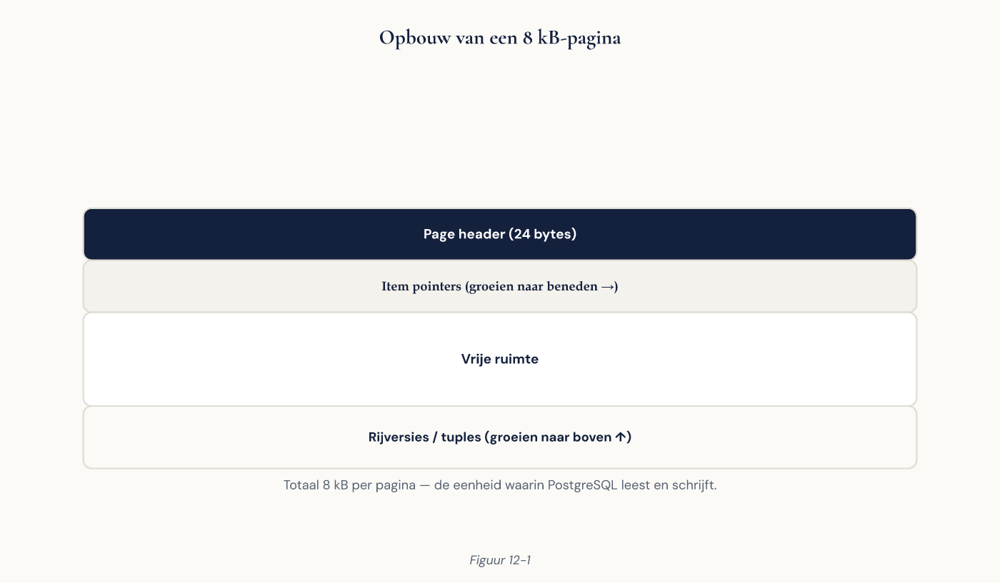

Deel 12 — Fysiek ontwerp: pagina’s, TOAST en bloat
Cursus Databasemanagement — Niveau 2: DBA en consultant Deelnemersreader | Dagdeel 2 van 12 (deel 12 van 30) Aansluiting: EDB PostgreSQL Professional — domein “Storage & maintenance”
Inhoud
- Leerdoelen
- Waarom een tabel groter is dan wat erin staat
- De pagina van 8 kilobyte
- Hoe een rij eruitziet
- Uitlijning: de kolomvolgorde die bytes kost
- TOAST: wat er gebeurt met grote waarden
- HOT-updates en fill factor
- Bloat: waar het vandaan komt
- Bloat meten
- Bloat opruimen
- Freeze en wraparound
- De visibility map en index-only scans
- Indexen worden ook opgeblazen
- Fysieke volgorde en correlatie
- Wat je hiervan in een ontwerp meeneemt
- Veelgemaakte fouten
- Aansluiting op de certificering
- Kernbegrippen
1. Leerdoelen
Na dit deel kun je:
- de opbouw van een pagina en een rijversie beschrijven en de vaste overhead per rij benoemen;
- uitleggen hoe uitlijning werkt en een kolomvolgorde kiezen die ruimte bespaart;
- vertellen wanneer een waarde naar TOAST gaat en welke gevolgen dat heeft voor prestaties;
- fill factor instellen en uitleggen wanneer HOT-updates optreden en wanneer niet;
- bloat meten met de systeemweergaven en de omvang ervan inschatten;
- de drie manieren om bloat op te ruimen tegen elkaar afwegen, inclusief hun lock-gedrag;
- uitleggen wat freeze doet en waarom wraparound een productieomgeving stil kan leggen;
- de rol van de visibility map bij index-only scans benoemen;
- de correlatie van een tabel opvragen en zeggen wat die betekent voor je queryplannen.
2. Waarom een tabel groter is dan wat erin staat
In deel 11 zag je het al: mutatie was na het laden bijna twee keer zo groot als de gegevens erin. De oorzaak was toen bloat door de grote UPDATE.
Dat is één van vijf redenen. De volledige lijst:
- Overhead per rij — elke rijversie draagt 23 bytes administratie plus uitlijning.
- Uitlijning tussen kolommen — de volgorde van je kolommen bepaalt hoeveel bytes er verloren gaan aan opvulling.
- Bloat — dode rijversies die nog niet zijn opgeruimd (deel 7).
- Fill factor — bewust vrijgelaten ruimte per pagina.
- Indexen — die tellen mee in de totale omvang en hebben hun eigen bloat.
Vandaag maak je alle vijf zichtbaar en meetbaar. Dat is geen boekhoudkundige oefening: op 2,4 miljoen mutaties is het verschil tussen een goed en een slecht fysiek ontwerp honderden megabytes, en daarmee ook het verschil in hoeveel er in je bufferpool past.
Dat laatste is het echte argument. Een tabel die 30% kleiner is, past 30% vaker in het geheugen. Dan is fysiek ontwerp geen ruimtebesparing maar een prestatiemaatregel.
3. De pagina van 8 kilobyte
PostgreSQL leest en schrijft altijd in pagina’s van 8 kB (instelbaar bij compileren, maar dat doet vrijwel niemand). Alles in dit deel gaat over wat er in zo’n pagina past.
De opbouw van een pagina:
| Onderdeel | Grootte | Bevat |
|---|---|---|
| Page header | 24 bytes | Checksum, vrije ruimte, LSN |
| Item pointers | 4 bytes per rij | Verwijzingen naar de rijen |
| Vrije ruimte | variabel | Waar nieuwe rijen komen |
| Rijversies | variabel | Van achter naar voren gevuld |
| Special space | 0 bytes bij tabellen | Bij indexen wel gebruikt |
De rijen worden van achteren naar voren in de pagina geschreven, de pointers van voren naar achteren. Ze groeien naar elkaar toe; als ze elkaar raken, is de pagina vol.

Praktisch gevolg: een rij kan nooit groter zijn dan een pagina. Wat niet past, gaat naar TOAST (paragraaf 6).
4. Hoe een rij eruitziet
Elke rijversie begint met een header van 23 bytes, opgevuld tot 24 door uitlijning:
| Veld | Bytes | Betekent |
|---|---|---|
t_xmin |
4 | Transactie die deze versie maakte (deel 7) |
t_xmax |
4 | Transactie die hem beëindigde |
t_cid / t_xvac |
4 | Command-id binnen de transactie |
t_ctid |
6 | Fysieke locatie; verwijst bij een update naar de nieuwe versie |
t_infomask2 |
2 | Aantal attributen plus vlaggen |
t_infomask |
2 | Statusvlaggen |
t_hoff |
1 | Waar de gegevens beginnen |
| NULL-bitmap | 1 bit per kolom | Alleen aanwezig als er NULL-waarden zijn |
Dat is 24 bytes overhead per rij, plus 4 bytes voor de item pointer in de pagina. Op een tabel met smalle rijen is dat aanzienlijk: een tabel met alleen twee integer-kolommen (8 bytes gegevens) verbruikt per rij ruim 36 bytes.
De les: heel smalle tabellen met heel veel rijen zijn relatief duur. Dat is een argument tegen het opsplitsen van een tabel “voor de netheid” wanneer de kolommen altijd samen worden opgehaald.
Merk op dat de NULL-bitmap alleen bestaat als er in die rij minstens één NULL staat. Een kolom NOT NULL maken bespaart dus soms werkelijk ruimte — al is het effect klein.
5. Uitlijning: de kolomvolgorde die bytes kost
Dit is het onderwerp waarvan deelnemers meestal niet weten dat het bestaat.
PostgreSQL lijnt waarden uit op hun natuurlijke grens: een integer (4 bytes) begint op een veelvoud van 4, een bigint of timestamptz (8 bytes) op een veelvoud van 8. Ruimte die daarvoor moet worden overgeslagen, is verloren.
Vergelijk deze twee definities, met exact dezelfde kolommen:
-- Ongunstig
CREATE TABLE slecht (
a smallint, -- 2 bytes, dan 6 bytes opvulling
b bigint, -- 8
c smallint, -- 2, dan 6 opvulling
d bigint, -- 8
e integer -- 4
); -- totaal 36 bytes
-- Gunstig
CREATE TABLE goed (
b bigint, -- 8
d bigint, -- 8
e integer, -- 4
a smallint, -- 2
c smallint -- 2
); -- totaal 24 bytes
Twaalf bytes verschil per rij, op identieke gegevens. Op 2,4 miljoen rijen is dat bijna 29 MB — en dat is dan alleen deze vijf kolommen.
De vuistregel: zet kolommen op aflopende grootte. Eerst de 8-bytestypen (bigint, timestamptz, double precision), dan de 4-bytestypen (integer, date, real), dan de 2-bytestypen (smallint), dan boolean en char, en als laatste de variabele types (text, numeric, jsonb).
Wanneer dit ertoe doet: bij tabellen met miljoenen rijen en veel smalle kolommen. Bij werkgever met 4.100 rijen is het verspilde moeite. Bij mutatie met 2,4 miljoen rijen is het meetbaar.
Wanneer je het niet doet: als het de leesbaarheid van je CREATE TABLE onwerkbaar maakt. Een logische groepering van kolommen heeft ook waarde. Optimaliseer waar het meetbaar is, en documenteer waarom de volgorde is zoals hij is — anders zet de volgende ontwikkelaar hem “netjes” terug.
Meten kan direct:
SELECT pg_column_size(ROW(1::smallint, 1::bigint, 1::smallint, 1::bigint, 1::integer)) AS slecht,
pg_column_size(ROW(1::bigint, 1::bigint, 1::integer, 1::smallint, 1::smallint)) AS goed;
6. TOAST: wat er gebeurt met grote waarden
Een rij past niet in meer dan één pagina. Wat doet PostgreSQL met een text-veld van 50 kB?
TOAST — The Oversized-Attribute Storage Technique. Zodra een rij groter dreigt te worden dan ongeveer 2 kB (een kwart pagina), gaat PostgreSQL waarden comprimeren en zo nodig verplaatsen naar een aparte TOAST-tabel. In de hoofdtabel blijft dan een verwijzing van 18 bytes achter.
De vier opslagstrategieën per kolom:
| Strategie | Comprimeren | Verplaatsen | Standaard voor |
|---|---|---|---|
PLAIN |
Nee | Nee | Vaste types (integer, date) |
EXTENDED |
Ja | Ja | text, jsonb, bytea |
EXTERNAL |
Nee | Ja | — |
MAIN |
Ja | Zo laat mogelijk | — |
Wijzigen kan:
ALTER TABLE koppelvlakbericht ALTER COLUMN inhoud SET STORAGE EXTERNAL;
Waarom je dat zou willen: EXTERNAL slaat ongecomprimeerd op. Dat kost schijfruimte maar maakt deelbewerkingen (substring, of jsonb-toegang tot één sleutel) veel sneller, omdat er niet eerst gedecomprimeerd hoeft te worden.
Wat je moet weten voor de praktijk:
- TOAST is grotendeels onzichtbaar. Je merkt het niet in je query’s — behalve in prestaties.
pg_relation_sizetelt de TOAST-tabel niet mee. Dat verklaart waarom een tabel “klein” lijkt en toch veel ruimte inneemt. Gebruikpg_total_relation_size.- Een TOAST-waarde ophalen kost een extra leesbewerking. Een
SELECT *op een tabel met een grootjsonb-veld is daarom veel duurder dan eenSELECTvan alleen de kolommen die je nodig hebt. Dit is het concrete argument tegenSELECT *uit deel 3, nu met een mechanisme erbij. - TOAST-tabellen krijgen hun eigen bloat en worden apart gevacuümd.
Bij Meridiaan speelt dit bij de koppelvlakbericht-tabel uit deel 6: ruwe berichten in jsonb. Die tabel is in de hoofdstructuur klein en in werkelijkheid de grootste van het schema.
7. HOT-updates en fill factor
Uit deel 7: een UPDATE schrijft een nieuwe rijversie. Wat er daarna gebeurt met de indexen, is het onderwerp van deze paragraaf.
Normaal moet elke index die naar die rij wijst, een nieuwe verwijzing krijgen. Tien indexen betekent tien indexbijwerkingen voor één UPDATE.
HOT — Heap-Only Tuple — is de optimalisatie die dat voorkomt. Als aan twee voorwaarden is voldaan:
- geen enkele geïndexeerde kolom wordt gewijzigd, en
- de nieuwe rijversie past op dezelfde pagina,
dan hoeft geen enkele index te worden bijgewerkt. De oude rijversie krijgt een verwijzing naar de nieuwe, binnen dezelfde pagina.
Voorwaarde 1 is een ontwerpkeuze: indexeer geen kolommen die vaak wijzigen als dat niet nodig is.
Voorwaarde 2 is waar fill factor binnenkomt:
ALTER TABLE mutatie SET (fillfactor = 85);
De standaard is 100: pagina’s worden volledig gevuld. Bij een UPDATE is er dan geen ruimte op de pagina en moet de nieuwe versie ergens anders heen — geen HOT.
Met fillfactor = 85 blijft 15% van elke pagina vrij voor toekomstige updates.
De afruil:
| Fill factor | Voordeel | Nadeel |
|---|---|---|
| 100 (standaard) | Compact; minder pagina’s te lezen | Geen HOT-updates |
| 85-90 | HOT-updates mogelijk | 10-15% meer pagina’s |
| 70 of lager | Zelden zinvol | Veel verspilde ruimte |
Wanneer verlagen: bij tabellen die veel worden bijgewerkt op niet-geïndexeerde kolommen. mutatie is het schoolvoorbeeld: elke rij wordt precies één keer bijgewerkt (verwerkt_op vullen), en die kolom is niet geïndexeerd.
Wanneer niet: bij tabellen die alleen groeien en nooit wijzigen. Daar is een lagere fill factor pure verspilling.
Let op: ALTER TABLE … SET (fillfactor = …) geldt alleen voor nieuwe pagina’s. Bestaande pagina’s blijven vol tot ze herschreven worden — bijvoorbeeld door VACUUM FULL of pg_repack.
Controleren of HOT werkt:
SELECT relname, n_tup_upd, n_tup_hot_upd,
round(100.0 * n_tup_hot_upd / nullif(n_tup_upd, 0), 1) AS pct_hot
FROM pg_stat_user_tables
WHERE n_tup_upd > 0
ORDER BY n_tup_upd DESC;
Een laag percentage bij een tabel die veel wordt bijgewerkt, is een concrete verbeterkans.
8. Bloat: waar het vandaan komt
Bloat is ruimte die is ingenomen door rijversies die niemand meer kan zien. Drie bronnen:
Updates en deletes. Elke UPDATE laat de oude versie achter; elke DELETE markeert alleen. Dat is MVCC (deel 7).
Lang lopende transacties. Zolang een transactie openstaat, moeten alle rijversies bewaard blijven die zij nog zou kunnen zien — in de hele database. Vacuum kan dan niets opruimen, ook niet in tabellen waar die transactie nooit is geweest. Dit is de meest onderschatte oorzaak, en de reden dat idle in transaction uit deel 7 een productieprobleem is en geen netheidskwestie.
Autovacuum die het niet bijhoudt. De drempelformule uit deel 11: op een grote tabel duurt het lang voordat er iets gebeurt.
Er is ook onvermijdbare bloat: een zekere hoeveelheid vrije ruimte is normaal en zelfs nuttig, want daar landen de volgende rijen. Het doel is niet nul. Vuistregel: onder 20% is prima, boven 50% is een probleem, en de trend zegt meer dan het getal.
9. Bloat meten
Het eerlijke antwoord: PostgreSQL heeft geen ingebouwde bloatmeting. Wat er is, zijn schattingen en een exacte maar dure meting.
Schatting uit de statistieken — goedkoop, ruw, prima als signaal:
SELECT relname,
n_live_tup, n_dead_tup,
round(100.0 * n_dead_tup / nullif(n_live_tup + n_dead_tup, 0), 1) AS pct_dood,
pg_size_pretty(pg_total_relation_size(relid)) AS omvang,
last_autovacuum
FROM pg_stat_user_tables
WHERE schemaname = 'meridiaan_prod'
ORDER BY n_dead_tup DESC;
Let op: n_dead_tup is een schatting die door autovacuum wordt bijgewerkt, niet een telling.
Exacte meting met pgstattuple — nauwkeurig, maar scant de hele tabel:
CREATE EXTENSION IF NOT EXISTS pgstattuple;
SELECT * FROM pgstattuple('mutatie');
-- of goedkoper, met steekproef:
SELECT * FROM pgstattuple_approx('mutatie');
De kolom free_percent is wat je zoekt. pgstattuple_approx gebruikt een steekproef en is op grote tabellen ordes van grootte sneller.
Draai de exacte meting niet routinematig op productie tijdens kantooruren — hij leest de hele tabel en verdringt daarmee je bufferpool.
De vraag die je stelt is niet “hoeveel bloat is er” maar “groeit het”. Een tabel die stabiel op 25% zit, is in evenwicht: vacuum ruimt evenveel op als er bijkomt. Een tabel die van 10% naar 40% is gegaan in een maand, heeft een probleem — en dat probleem is meestal een lang lopende transactie of een te hoge autovacuum-drempel.
10. Bloat opruimen
Drie gereedschappen, met sterk verschillende kosten.
| Gereedschap | Geeft ruimte terug aan OS | Lock | Extra ruimte nodig |
|---|---|---|---|
VACUUM |
Nee | Licht; tabel blijft bruikbaar | Nee |
VACUUM FULL |
Ja | ACCESS EXCLUSIVE — alles wacht |
Ja, volledige kopie |
pg_repack |
Ja | Kort, alleen aan begin en eind | Ja, volledige kopie |
VACUUM is de normale gang van zaken en gebeurt vanzelf. De ruimte blijft in de tabel en wordt hergebruikt. In verreweg de meeste gevallen is dit genoeg — en het is wat je wilt, want teruggeven aan het OS betekent dat je hem straks weer moet opvragen.
VACUUM FULL herschrijft de tabel volledig. Alleen na een eenmalige grote opruiming, in een onderhoudsvenster. Onthoud de valkuil uit deel 11: hij heeft tijdelijk een volledige tweede kopie nodig, dus juist niet bruikbaar op een schijf die vol loopt.
pg_repack is een extensie die hetzelfde doet als VACUUM FULL maar online: hij bouwt een kopie op terwijl de tabel in gebruik blijft, houdt hem bij met triggers, en wisselt aan het eind om onder een korte lock.
pg_repack -d meridiaan --table meridiaan_prod.mutatie
Voorwaarden: de tabel heeft een primaire sleutel of unieke index nodig, en je hebt tijdelijk ruimte voor een tweede kopie. Voor een productieomgeving die niet uit mag, is dit het gereedschap — niet VACUUM FULL.
De volgorde waarin je te werk gaat bij een bloatprobleem:
- Zoek de oorzaak. Lang lopende transacties? Autovacuum-drempel te hoog? Een replicatieslot dat achterloopt (deel 18)?
- Los de oorzaak op. Anders is de tabel over twee maanden weer opgeblazen.
- Ruim daarna pas op, met
pg_repackof in een venster metVACUUM FULL.
Wie stap 1 en 2 overslaat, staat elk kwartaal opnieuw een tabel te herschrijven.
11. Freeze en wraparound
Uit deel 7, nu volledig.
Elke rijversie draagt de transactie-ID die hem maakte (xmin). Die teller is 32 bits: ongeveer 4 miljard waarden, en hij loopt rond. Zou een oude rij een xmin houden die na het rondlopen “in de toekomst” ligt, dan wordt hij onzichtbaar — gegevensverlies zonder foutmelding.
Om dat te voorkomen bevriest vacuum oude rijen: hij markeert ze als “altijd zichtbaar”, waarna hun xmin niet meer relevant is.
De parameters:
| Parameter | Doet |
|---|---|
vacuum_freeze_min_age |
Vanaf welke leeftijd rijen bevroren mogen worden |
autovacuum_freeze_max_age |
Wanneer een agressieve vacuum wordt afgedwongen |
vacuum_failsafe_age |
Wanneer alle rem eraf gaat om erger te voorkomen |
Volgen hoe ver je bent:
SELECT relname,
age(relfrozenxid) AS transacties_sinds_freeze,
round(100.0 * age(relfrozenxid) / 2000000000, 1) AS pct_naar_wraparound
FROM pg_class c
JOIN pg_namespace n ON n.oid = c.relnamespace
WHERE relkind = 'r' AND n.nspname = 'meridiaan_prod'
ORDER BY age(relfrozenxid) DESC;
Wat er gebeurt als je dit negeert, in oplopende ernst:
- Autovacuum start een agressieve freeze-run — merkbare I/O op een ongelegen moment.
- PostgreSQL begint te waarschuwen in de log.
- Bij ongeveer 3 miljoen resterende transacties: waarschuwingen bij elke commit.
- Uiteindelijk: de database weigert nieuwe transacties en gaat alleen nog lezen. Herstel vraagt een handmatige vacuum in single-user mode, met downtime.
Dat vierde punt haalt het nieuws elke paar jaar bij een grote organisatie. Het is altijd hetzelfde verhaal: autovacuum stond uit of kwam er niet doorheen, en niemand keek naar age(relfrozenxid).
Zet dit in je monitoring (deel 20). Het is een van de weinige waarden waarbij je maanden van tevoren kunt zien dat er iets misgaat.
12. De visibility map en index-only scans
Bij elke tabel hoort een visibility map: één bit per pagina dat zegt “alle rijen op deze pagina zijn zichtbaar voor iedereen”.
Waar dat voor dient:
Vacuum kan pagina’s overslaan die sinds de vorige keer niet zijn gewijzigd. Dat maakt vacuum op grote, stabiele tabellen goedkoop.
Index-only scans worden mogelijk (deel 8). Een index bevat de waarde maar niet de zichtbaarheidsinformatie. Normaal moet de database dus alsnog de tabel raadplegen. Staat de pagina in de visibility map als volledig zichtbaar, dan hoeft dat niet — en dan is de scan werkelijk index-only.
Het gevolg dat je moet kennen: een index-only scan werkt alleen goed als de tabel recent gevacuümd is. Zie je in EXPLAIN ANALYZE een Index Only Scan met een hoog aantal Heap Fetches, dan is de visibility map verouderd:
Index Only Scan using ... (actual rows=1000 loops=1)
Heap Fetches: 987
987 van de 1000 rijen moesten alsnog uit de tabel worden gehaald. De oplossing is niet een andere index maar VACUUM.
Dit is de derde plek in deze cursus waar vacuum een prestatievraag blijkt te zijn in plaats van een opruimkwestie. De eerste was statistieken (deel 8), de tweede bloat, en dit is de derde.
13. Indexen worden ook opgeblazen
Een B-tree-index krijgt bloat op zijn eigen manier: pagina’s raken deels leeg wanneer rijen verdwijnen, en PostgreSQL voegt halflege indexpagina’s niet automatisch samen.
Meten:
CREATE EXTENSION IF NOT EXISTS pgstattuple;
SELECT * FROM pgstatindex('mutatie_deelnemer_idx');
Let op avg_leaf_density. Rond 90% is gezond; onder 50% is de index opgeblazen.
Opruimen kan online:
REINDEX INDEX CONCURRENTLY mutatie_deelnemer_idx;
CONCURRENTLY bouwt een nieuwe index naast de oude en wisselt om. Duurt langer, blokkeert geen schrijvers, en kan mislukken — dan blijft er een ongeldige index achter die je moet opruimen. Controleer na afloop met \d.
Voor een tabel met veel indexen: REINDEX TABLE CONCURRENTLY mutatie;
Wanneer dit nodig is: na een grote opruimactie, of bij een index waarvan de sleutels sterk gewijzigd zijn. Niet als routineonderhoud — dat is meestal een oplossing zoekende naar een probleem.
14. Fysieke volgorde en correlatie
De correlatie geeft aan in hoeverre de fysieke volgorde van de rijen overeenkomt met de logische volgorde van een kolom. Een waarde tussen −1 en 1.
SELECT attname, correlation
FROM pg_stats
WHERE schemaname = 'meridiaan_prod' AND tablename = 'mutatie'
ORDER BY abs(correlation) DESC NULLS LAST;
Waarom dit ertoe doet: bij een correlatie dicht bij 1 liggen rijen met opeenvolgende waarden fysiek naast elkaar. Een indexscan over een bereik leest dan aaneengesloten pagina’s in plaats van door de hele tabel te springen — veel goedkoper. De planner weet dit en rekent ermee.
Bij mutatie is aangemeld_op sterk gecorreleerd als de rijen in chronologische volgorde zijn ingevoegd. Dat is precies de eigenschap waarop een BRIN-index leunt (deel 14): die slaat per blokgroep alleen het minimum en maximum op en is daardoor minuscuul — maar hij werkt alleen bij hoge correlatie.
Je kunt de fysieke volgorde afdwingen:
CLUSTER mutatie USING mutatie_aangemeld_idx;
Maar let op: CLUSTER neemt een ACCESS EXCLUSIVE-lock en de volgorde blijft niet vanzelf behouden. Nieuwe en bijgewerkte rijen komen gewoon waar plaats is. Het is een eenmalige herordening, geen eigenschap.
Praktische afweging: voor een tabel die van nature chronologisch groeit — zoals mutatie — is de correlatie vanzelf goed en heb je CLUSTER niet nodig. Voor een tabel die willekeurig wordt bijgewerkt, keert de wanorde na CLUSTER snel terug. Er is een reden dat je dit commando zelden ziet.
15. Wat je hiervan in een ontwerp meeneemt
Concreet, in volgorde van opbrengst:
- Kolomvolgorde op aflopende grootte bij tabellen met miljoenen rijen. Gratis, meetbaar, en alleen bij het ontwerp te doen.
- Fill factor verlagen bij tabellen die veel worden bijgewerkt op niet-geïndexeerde kolommen. Eén instelling, maar alleen effectief voor nieuwe pagina’s.
- Niet indexeren wat vaak wijzigt, tenzij nodig — dat blokkeert HOT-updates.
SELECT *vermijden bij tabellen met grote TOAST-kolommen. Hier is het geen stijlkwestie maar een extra leesbewerking per rij.- Autovacuum per tabel afstellen (deel 11) in plaats van achteraf herstellen.
age(relfrozenxid)monitoren. Van alle waarden in dit deel is dit de enige waarbij falen catastrofaal is.
En de houding uit deel 8, opnieuw: meet voor en na. Een kolomvolgorde die 12 bytes per rij bespaart, is een aardig verhaal; 29 MB op een tabel van 600 MB is een resultaat.
16. Veelgemaakte fouten
| Fout | Gevolg | Beter |
|---|---|---|
VACUUM FULL als routineonderhoud |
Downtime, en de bloat komt terug | Oorzaak zoeken; pg_repack als het echt moet |
| Bloat opruimen zonder de oorzaak weg te nemen | Elk kwartaal opnieuw | Eerst lang lopende transacties en drempels |
pg_relation_size gebruiken bij TOAST-kolommen |
Onderschatting van de omvang | pg_total_relation_size |
| Fill factor verlagen op een append-only tabel | Verspilde ruimte, geen baat | Alleen bij veel updates |
| Fill factor wijzigen en verwachten dat het meteen werkt | Bestaande pagina’s blijven vol | Herschrijven of afwachten |
| Kolomvolgorde optimaliseren op een tabel met duizend rijen | Verspilde moeite | Alleen bij miljoenen rijen |
age(relfrozenxid) niet monitoren |
Kans op een database die stopt met schrijven | In je monitoring (deel 20) |
Heap Fetches negeren bij een index-only scan |
Trage query, verkeerde diagnose | VACUUM |
CLUSTER als permanente oplossing |
De volgorde vervaagt weer | Eenmalig, of niet |
pgstattuple op productie tijdens piekuren |
Bufferpool verdrongen | pgstattuple_approx, buiten de piek |
17. Aansluiting op de certificering
Voor de EDB PostgreSQL Professional-certificering paraat:
- de opbouw van een pagina en de vaste overhead per rijversie;
- uitlijning en het effect van kolomvolgorde;
- wanneer TOAST optreedt, de vier opslagstrategieën, en dat TOAST apart wordt meegeteld;
- HOT-updates: de twee voorwaarden, en de rol van fill factor;
- de drie manieren om bloat op te ruimen en hun lock-gedrag;
- freeze,
age(relfrozenxid)en de gevolgen van wraparound; - de visibility map en de relatie met index-only scans en
Heap Fetches; REINDEX CONCURRENTLY;- correlatie en de betekenis daarvan voor queryplannen.
Raadpleeg de actuele EDB-blauwdruk; deze cursus is voorbereiding, geen vervanging van het officiële examenmateriaal.
18. Kernbegrippen
Pagina — de eenheid van 8 kB waarin PostgreSQL leest en schrijft. Tuple header — 24 bytes administratie per rijversie. Uitlijning (alignment) — opvulling zodat waarden op hun natuurlijke grens beginnen. TOAST — mechanisme voor waarden die niet in een pagina passen. HOT-update — update zonder indexbijwerking; vereist een niet-geïndexeerde kolom en ruimte op de pagina. Fill factor — percentage van een pagina dat bij het vullen wordt gebruikt. Bloat — ruimte ingenomen door niet-opgeruimde rijversies. Freeze — rijen markeren als altijd zichtbaar, om wraparound te voorkomen. Wraparound — het omlopen van de transactie-ID-teller. Visibility map — bit per pagina dat volledige zichtbaarheid aangeeft. Heap Fetches — tabelbezoeken tijdens een index-only scan; hoog betekent verouderde visibility map. Correlatie — mate waarin de fysieke rijvolgorde overeenkomt met de waardevolgorde van een kolom.
Volgende deel: query-optimalisatie. Je weet nu hoe de gegevens er fysiek liggen; volgende keer lees je queryplannen op productieschaal en vind je de query’s die er werkelijk toe doen.